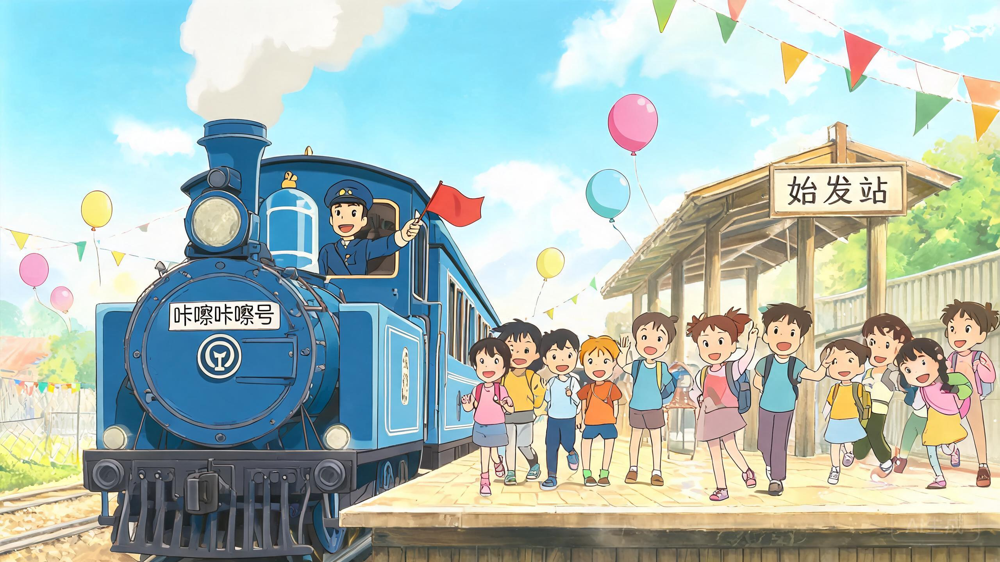
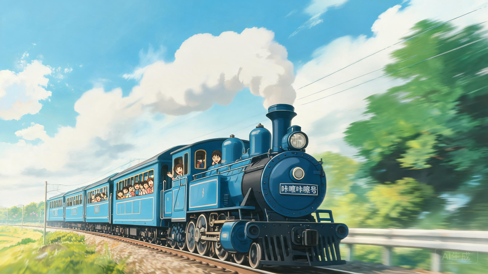
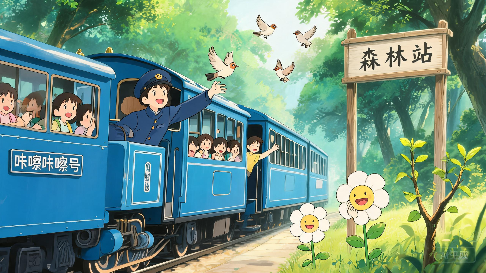
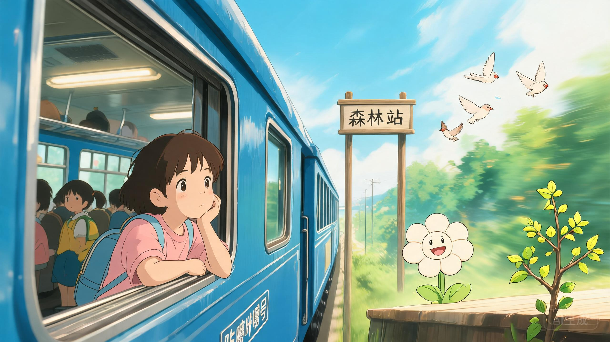
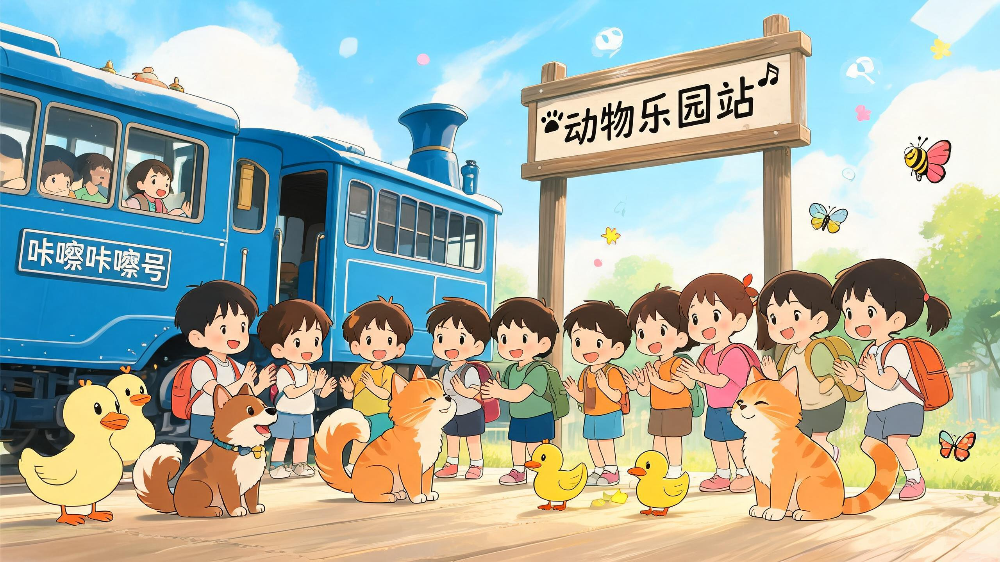
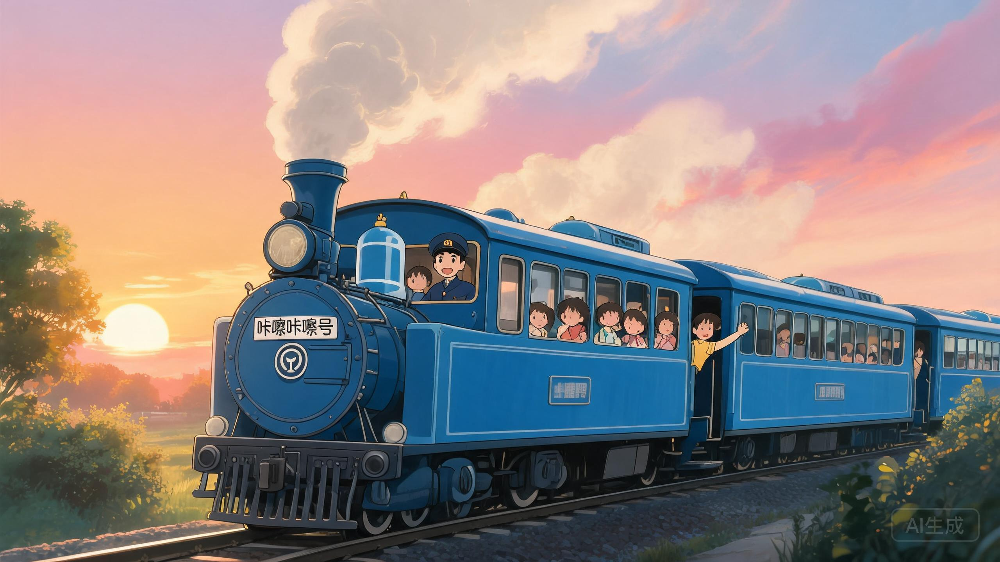
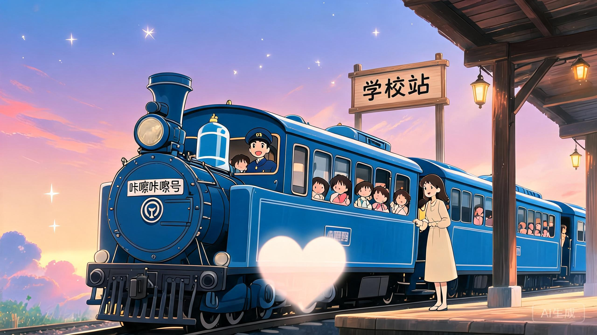

🚂
咔嚓咔嚓号小火车
动画视频PPT · 七幕旅程 · 吉卜力风格
▶ 出发啦！
视频加载中…
跳过视频 →
开场视频
▶ 视频播放中 · 点击或按 → 跳过

VIDEO SLOT · V01
第一幕
口哨+木琴 · 火车鸣笛
ACT 01 · 热闹的始发站
咔嚓咔嚓号，准备出发！
🎈 小朋友们排好队，我们要出发啦！
🎤 主持人：小朋友们，咔嚓咔嚓号要出发啦！大家准备好了吗？

VIDEO SLOT · V02
第二幕
器乐版《火车开啦》· 响板节奏
ACT 02 · 火车开动啦
咔嚓咔嚓，向前奔跑！
🌳 窗外的树木都在向后跑呢！
🎤 主持人：咔嚓咔嚓——火车开动啦！

VIDEO SLOT · V03
第三幕
木管+竖琴 · 鸟鸣声效
🕊️
🕊️
🕊️
ACT 03 · 抵达森林站
森林里的新朋友
🌸 小鸟、小花都来欢迎我们啦！
🎤 主持人：哇！森林站到了！小鸟、小花都来欢迎我们啦！

VIDEO SLOT · V04
第四幕
打击乐节奏 · 轻柔弦乐
ACT 04 · 告别森林站
森林站，再见！
🌿 依依不舍，但旅程还在继续……
🎤 主持人：小朋友们，和森林站的朋友们说再见吧！再见——

VIDEO SLOT · V05
第五幕
《友谊拍手歌》· 动物叫声
🐝
🦋
🦋
🐝
ACT 05 · 抵达动物乐园站
动物乐园大狂欢
🐶🐱🐥 一起拍手！汪汪！喵喵！嘎嘎！
🎤 主持人：动物乐园站到啦！大家一起拍手！👏👏👏

VIDEO SLOT · V06
第六幕
钢琴+大提琴 · 温情慢版
ACT 06 · 夕阳归途
金色的回家路
🌅 夕阳下，我们踏上回家的路……
🎤 主持人：太阳公公要回家了，咔嚓咔嚓号也要回家啦……

✨
⭐
✨
⭐
💗
VIDEO SLOT · V07
第七幕
童声合唱 · 哨子声结尾
ACT 07 · 回到学校站
友谊的终点，也是起点
💗 谢谢你，我的朋友！
🎤 主持人：学校站到啦！谢谢咔嚓咔嚓号，谢谢所有的朋友！
1 / 7
‹
›
⛶
← → 切换幕次
Space 下一幕
F 全屏
H 显示/隐藏提示
M 静音/取消静音
🔊